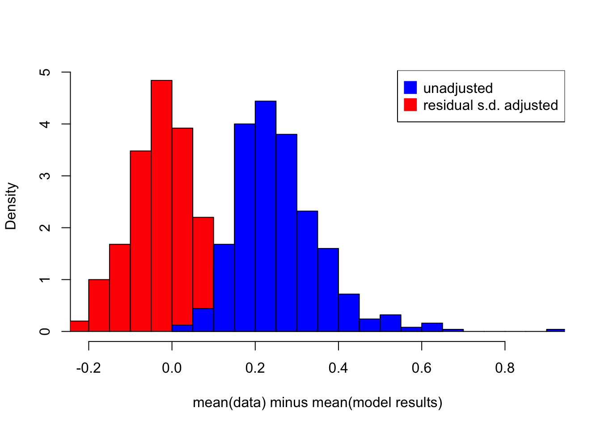

If function \(f\) is convex:
\(E[f(x)] \geq f(E[x])\)
If function \(f\) is concave:
\(E[f(x)] \leq f(E[x])\)
suppose the variable of interest \(Y\): \[ Y = e^{\beta_0 + \beta_1X_1 + \beta_2X_2 + \epsilon}\] where \(\epsilon \sim \mathcal{N}(0, \sigma I)\).
To model it, we take the log such that:
\[log(Y) = \beta_0 + \beta_1X_1 + \beta_2X_2 + \epsilon\]
Then we do linear regression on \(log(Y)\), so we can forecast \(E[log(Y)]\), and we forecast \(Y\) by taking the exponential transformation: \[ \begin{aligned} e^{E[log(Y)]} &= e^{E[\beta_0 + \beta_1X_1 + \beta_2X_2 + \epsilon]}\\ &= e^{\beta_0^{(OLS)}+\beta_1^{(OLS)}X_1+\beta_2^{(OLS)}X_2} \\ \end{aligned} \] Whereas, we are interested in
\[ \begin{aligned} E[e^{log(Y)}] &= E[e^{\beta_0 + \beta_1X_1 + \beta_2X_2 + \epsilon}]\\ &= e^{\beta_0^{(OLS)}+\beta_1^{(OLS)}X_1+\beta_2^{(OLS)}X_2+ \frac{\sigma^2}{2}} \\ & \neq e^{\beta_0^{(OLS)}+\beta_1^{(OLS)}X_1+\beta_2^{(OLS)}X_2} = e^{E[log(Y)]}\\ \end{aligned} \]
The following simulation shows the difference between \(E[e^{log(Y)}]\) and \(e^{E[log(Y)]}\)
## simulation times
n=500
E_forecast <- data.frame(matrix(NA,nrow=n, ncol=1))
E_forecast_adjusted <- data.frame(matrix(NA,nrow=n, ncol=1))
colnames(E_forecast) <- 'error'
colnames(E_forecast_adjusted) <- 'error'
for(i in 1:n) {
b0 <- rep(2,500)
b1 <- 2.2
b2 <- 2.5
x1 <- rnorm(500,1,0.5)
x2 <- rnorm(500,-2,0.4)
e <- rnorm(500,0,0.6)
log_d <- b0+b1*x1+b2*x2+e
d <- exp(log_d)
variables <- cbind.data.frame(x1,x2,log_d,d)
## regression on log_d
lm_logd <- lm(formula = log_d~x1+x2, data = variables[1:500,])
summary(lm_logd)
d_hat <- exp(lm_logd$fitted.values)
d_hat_adjusted <- exp(lm_logd$fitted.values+summary(lm_logd)$sigma^2/2)
E_forecast[i,1] <- mean(d[1:500])-mean(d_hat)
E_forecast_adjusted[i,1] <- mean(d[1:500])-mean(d_hat_adjusted)
}
hist(E_forecast_adjusted[,1], breaks = 30, col = 'red', xlim = c(-0.2,0.9), freq = F, main = '', xlab = 'mean(data) minus mean(model results)')
hist(E_forecast[,1], breaks = 30, xlim = c(-0.2,0.9), freq = F, add = T, col = 'blue')
legend('topright', legend = c('unadjusted','residual s.d. adjusted'), col = c('blue','red'), pt.cex=2, pch=15)
Assuming a probability function follows: \[ p = \frac{1}{e^{-(\alpha + x\beta + \epsilon)}} \]
In other words, the log-odd ratio can be modelled by linear regression: \[ log(\frac{p}{1-p}) = \alpha + x\beta + \epsilon \]
Then, when we observed data p, we can transform to the log-odds ratio and perform the linear regression to estimate \(\alpha\) and \(\beta\). However, the best estimates of \(\alpha\) and \(\beta\) will give biased estimates of the probability \(p\) as:
\[E[p] = E[\frac{1}{1+e^{-(\alpha + x\beta + \epsilon)}}] \neq \frac{1}{1+e^{-E[\alpha+x \beta+\epsilon]}}\]
library(Rlab)
library(sqldf)
alpha <- 2
beta <- 3.5
n = 150
m = 500
variables <- data.frame(matrix(NA, nrow = n*m, ncol = 1))
colnames(variables) <- 'x1'
for(i in 1:n) {
x1 <- rep(rnorm(1,0,1),m)
e <- rnorm(m,0,3)
logOdds <- alpha + beta*x1+e
variables$x1[(1+m*(i-1)):(i*m)] <- x1
variables$e[(1+m*(i-1)):(i*m)] <- e
variables$logOdds[(1+m*(i-1)):(i*m)] <- logOdds
variables$p[(1+m*(i-1)):(i*m)] <- exp(logOdds)/(1+exp(logOdds))
}
lm_logOdds <- lm(logOdds~x1, data = variables)
variables$model_p <- exp(lm_logOdds$fitted.values)/(1+exp(lm_logOdds$fitted.values))
groups <- sqldf("select x1, avg(p), avg(model_p) from variables group by 1")
plot(x = groups$x1, y = groups$`avg(p)`, ylab = "probability estimate", xlab="x1")
points(x = groups$x1, y = groups$`avg(model_p)`, col = 'red')
legend(x=1,y=0.2,c("E[P|X1]","1/(1+E[logOdds|X1])"),cex=.8,col=c("black","red"),pch=c(1,1))Now we know they are different, but how can we adjust it? For example, given the first obervation \(x_1 = c\), how do we correctly forecast the \(p\) using the estimated parameters?
\[ \begin{aligned} E[P|x=c] &= E[\frac{1}{1+e^{-(\alpha + x\beta + \epsilon)}}|x=c]\\ &= \int \frac{1}{1+e^{\alpha+\beta c + \epsilon}} \frac{1}{\sqrt{\sigma}\sqrt{2\pi}} \cdot e^{\frac{1}{2}(\frac{x}{\sqrt{\sigma}})^2} dx \\ \end{aligned} \]
To solve this analytically seems difficulty if not impossible (at least for me…). So, here I would like to do a simulation to estimate it.
## Given x = c = 1.04487026824233## E[P|x=c]: 0.953831120196396## 1/(1+E[logOdds|x=c]): 0.996539266519576sigma <- sd(variables$e)
c <- variables$x1[1]
sim_e <- rnorm(1000,0,sigma)
p_adjusted <- mean(1/(1+exp(-alpha-beta*c-sim_e)))
cat(paste0("With the estimated alpha, beta and sd(e), the probability p can estimated by simulation:",p_adjusted))## With the estimated alpha, beta and sd(e), the probability p can estimated by simulation:0.953910546410715The logistic regression is estimated by maximum likelihood which is invariant to transformation such that \(g(\hat{\theta}_{MLE}) = \widehat{g(\theta)_{MLE}}\).
Compare the simulations of \(X = x_{t_1}, x_{t_2},...x_{t_n}\), and for each \(x_t\), the noise is simulate 500 times.
Two way to think about the probability of default \(p\) and the default event \(b\):
and the default event is a binary variable \(b\) follows Bernoulli distribution
\[ \begin{aligned} b_{t,i} \sim \mathcal{B(p_t)} \end{aligned} \]
library(Rlab)
library(sqldf)
n <- 100
m <- 300
variables <- data.frame(matrix(NA, nrow = n*m, ncol = 1))
colnames(variables) <- 'x1'
variables$e <- NA
alpha <- -1
beta = 4
for(i in 1:n) {
x1 <- rep(rnorm(1,0,0.6),m)
## for each x1 we simulate m data point to approximate E[p]
e <- rnorm(m,0,3)
logOdds <- alpha+beta*x1+e
logOdds_f <- alpha+beta*x1
variables$e[(1+m*(i-1)):(i*m)] <- e
variables$x1[(1+m*(i-1)):(i*m)] <- x1
variables$E_p[(1+m*(i-1)):(i*m)] <- mean(exp(logOdds)/(1+exp(logOdds)))
variables$logOdds[(1+m*(i-1)):(i*m)] <- logOdds
variables$p[(1+m*(i-1)):(i*m)] <- exp(logOdds)/(1+exp(logOdds))
variables$p_f[(1+m*(i-1)):(i*m)] <- exp(logOdds_f)/(1+exp(logOdds_f))
variables$b_f[(1+m*(i-1)):(i*m)] <- rbern(m, exp(logOdds_f)/(1+exp(logOdds_f)))
for(j in (1+m*(i-1)):(i*m)) {
variables$b[j] <- rbern(1,variables$p[j])
}
}
#variables$logOdds <- alpha+beta*variables$x1+variables$e
#variables$p <- exp(variables$logOdds)/(1+exp(variables$logOdds))
#variables$b <- ifelse(variables$p>0.5, 1,0)
variables$Odds <- exp(variables$logOdds)
glm_sim <- glm(formula = b~x1, data = variables, family = binomial)
glm_sim_f <- glm(formula = b_f~x1, data = variables, family = binomial)
variables$model_p <- glm_sim$fitted.values
variables$model_p_f <- glm_sim_f$fitted.values
variables$model_b <- ifelse(variables$model_p>0.5, 1,0)
variables$model_b_f <- ifelse(variables$model_p_f>0.5, 1,0)
variables$model_error <- variables$p-variables$model_p
variables$p_E <- exp(alpha+beta*variables$x1)/(1+exp(alpha+beta*variables$x1))
variables$transform_error <- variables$p-variables$E_p
groups <- sqldf("select x1, avg(p), avg(p_f),avg(model_p), avg(model_p_f), avg(p_E), avg(E_p), sum(b), sum(model_b), count(*), sum(model_b)/count(*) as model_pd, sum(b)/count(*) as pd, sum(p-model_p) as model_error from variables group by 1")
plot(x = groups$x1, y = groups$`avg(model_p)`, ylim = c(0,1), xlab = 'x1', ylab = '')
lines(x = groups$x1, y = groups$`avg(p)`, col = 'green')
points(x = groups$x1, y = groups$`avg(E_p)`, col = 'red')
points(x = groups$x1, y = groups$`avg(p_E)`, col = 'blue')print(glm_sim$coefficients)## (Intercept) x1
## -0.4782511 1.9337328plot(x = groups$x1, y = groups$`avg(model_p_f)`, ylim = c(0,1), xlab = 'x1', ylab = '')
lines(x = groups$x1, y = groups$`avg(p_f)`, col = 'brown')print(glm_sim_f$coefficients)## (Intercept) x1
## -0.997942 3.952061